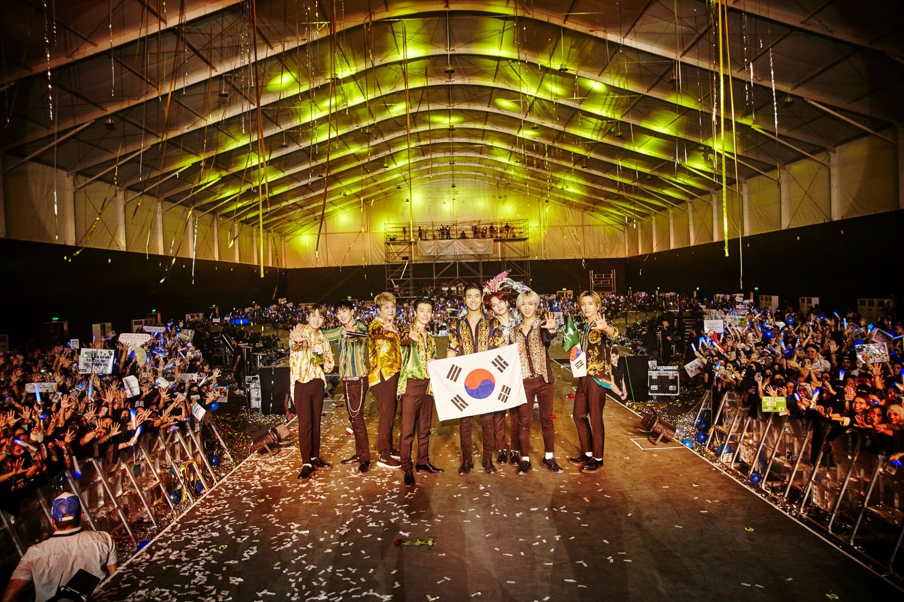
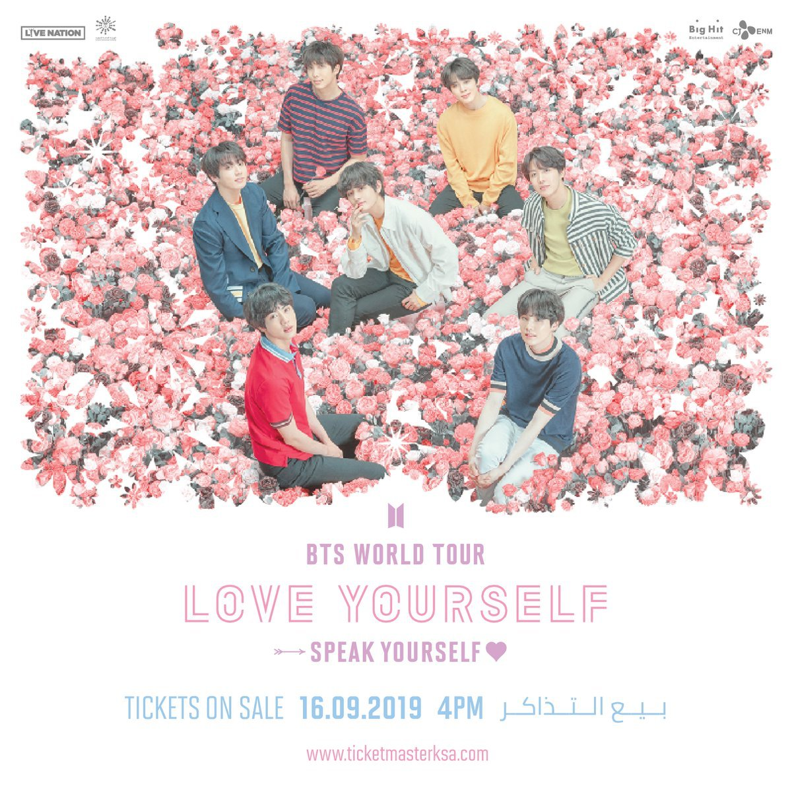
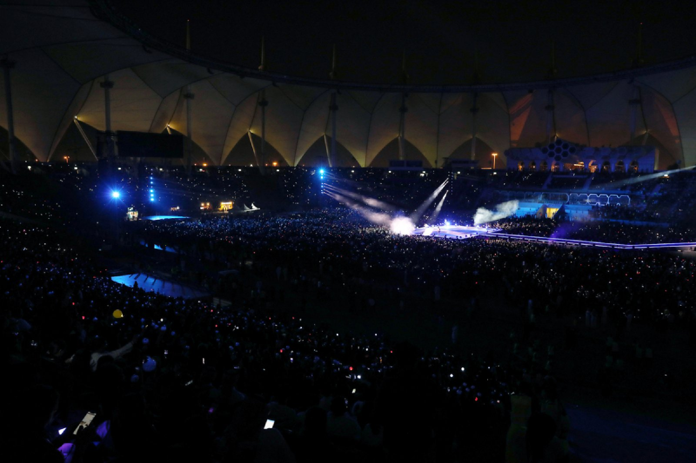
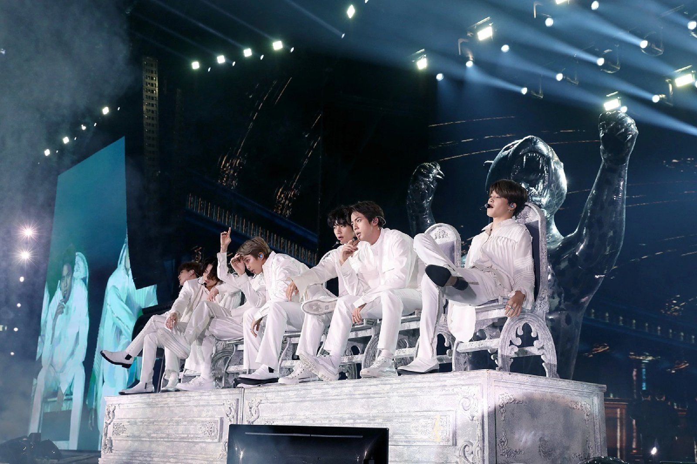
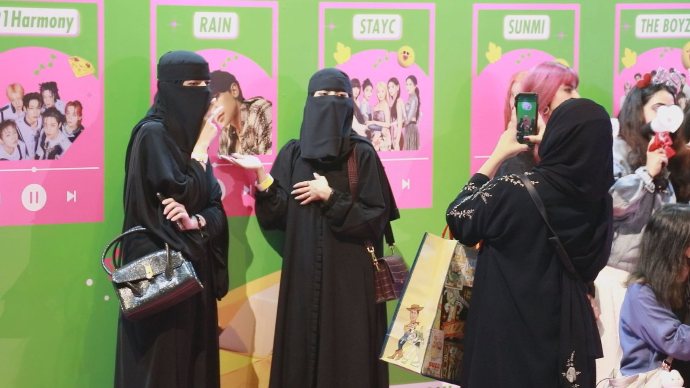
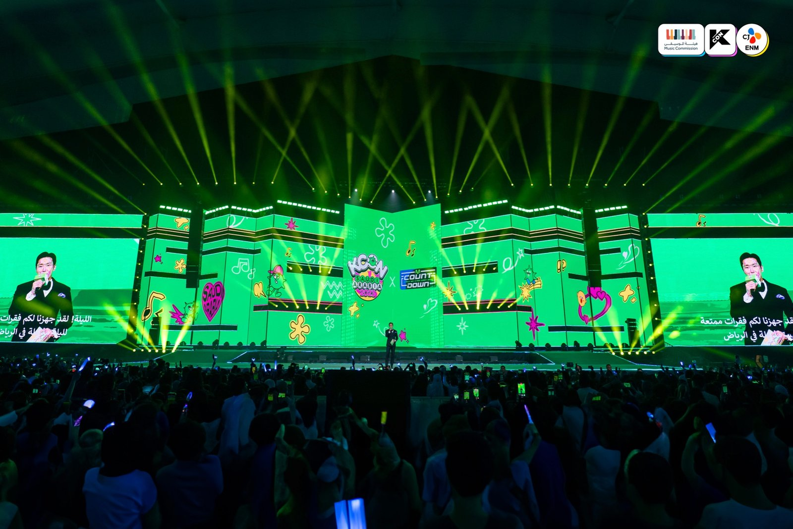
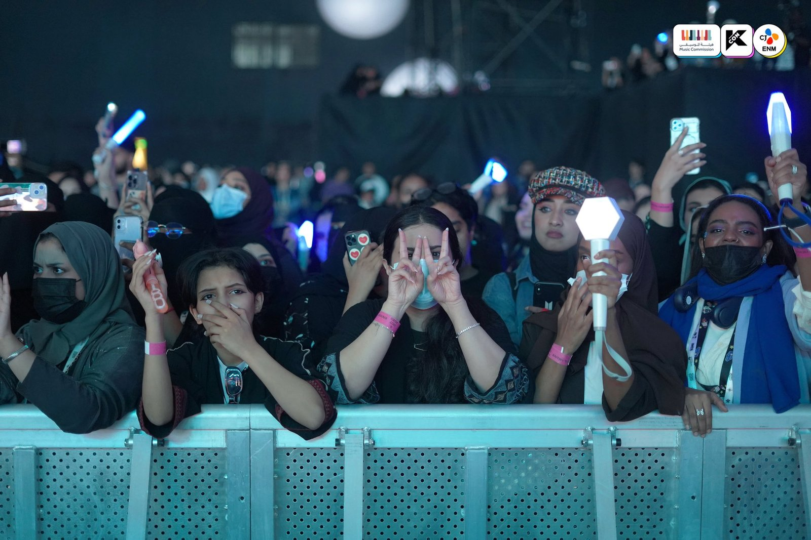
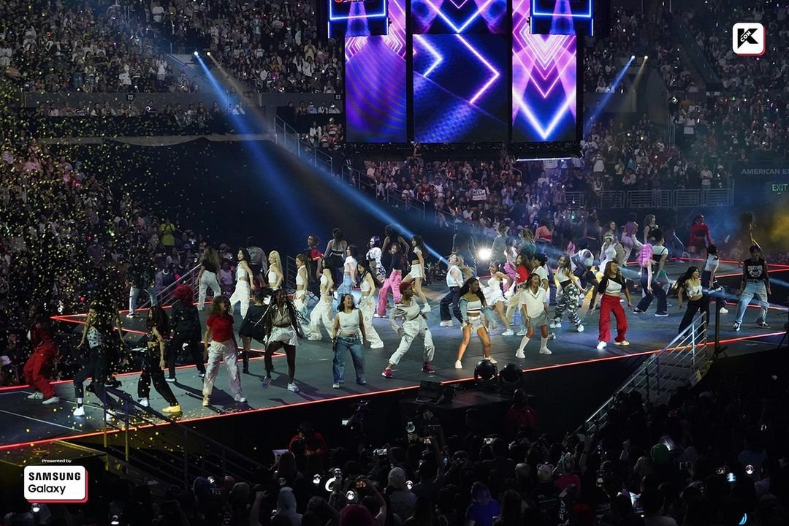

사우디 대중음악, 금기를 넘어 케이팝 변화의 문을 두드리다
사우디아라비아에서 대중음악 공연은 한때 상상하기 어려운 일이었다. 1979년 메카 대사원 점거 사태 이후 사우디 정부는 종교 지도자들과 타협해 사회 전반에 이슬람 율법을 엄격히 적용했다. 그 결과 1980년대 들어 영화관과 콘서트장은 타락을 조장한다는 이유로 폐쇄됐고, 종교 경찰(미덕 장려와 악 방지 위원회, CPVPV)이 이를 감독했다. 대중음악 공연은 수십 년 동안 공식 무대에서 사라지고 일부만 비공식·사적 모임에 머물렀다. 그러나 2018년 이후 사우디 정부의 '비전 2030(Vision 2030)' 문화 개방 정책이 본격화되면서 리야드와 제다 등지에 대형 공연장이 세워지고 세계적인 아티스트들의 무대가 잇따라 열리기 시작했다. 이 같은 변화는 케이팝에도 영향을 미치면서 한국 아티스트들의 사우디 무대가 현실로 이어졌다.
슈퍼주니어, BTS, 그리고 KCON
2019년 7월 12일 제다(Jeddah) 시즌 페스티벌에서 슈퍼주니어가 아시아 가수 최초로 단독 공연을 킹 압둘라 스포츠 시티 스타디움(King Abdullah Sports City Stadium)에서 열어 화제를 모았다. 홍해 연안의 항구도시이자 사우디 제2의 도시인 제다는 관광·문화 개방 정책의 전진기지로 꼽힌다. 약 6만 명을 수용할 수 있는 이 스타디움에 슈퍼주니어를 보기 위한 수만 명의 관객이 사우디 전역에서 몰려들었다.

▲ 슈퍼주니어의 사우디 제다 공연 포스터 및 현장 — 출처: 슈퍼주니어 페이스북 계정(@superjunior)
같은 해 10월 11일에는 BTS가 리야드의 킹 파하드 인터내셔널 스타디움(King Fahd International Stadium)에서 케이팝 그룹 최초로 수도 리야드 무대 단독 공연을 가졌다. 이 공연은 사우디아라비아 정부 산하 엔터테인먼트청(General Entertainment Authority, 이하 GEA)이 주관한 리야드 시즌 축제 프로그램 일환이었다. GEA는 무함마드 빈 살만 왕세자가 추진하는 '비전 2030' 문화 개방 정책을 실행하는 핵심 기관이다. BTS는 정부의 공식 초청을 받아 약 7만 명을 수용할 수 있는 이 스타디움에서 비(非)아랍 아티스트 최초 스타디움 단독 공연으로 세계 언론들의 큰 주목을 받았다.

▲ BTS 리야드 단독 공연 포스터 — 출처: 중동 티켓마스터(Ticketmaster Middle East) X 계정(@TicketmasterME)


▲ 리야드 킹파하드 인터내셔널 스타디움 내부, BTS 공연 현장 — 출처: 빅히트 엔터테인먼트
관객 규모는 매체마다 차이가 있었다. 영국 《The Guardian》은 약 3만 명으로, 현지 《Gulf News》는 약 6만 명으로 보도했다. 수치는 다르지만 수만 명의 관객이 운집했다는 점은 분명했다. 공연은 전 세계로 생중계되며 큰 반향을 불러일으켰다. 이 무대는 사우디 정부의 문화 개방 전략(비전 2030)을 상징하는 사건으로 평가됐지만 동시에 국제 인권단체들이 BTS의 출연을 비판하는 등 논란도 뒤따랐다. BBC는 이를 두고 "사우디 정부가 경제 개혁과 사회 개방을 내세운 '비전 2030' 전략 일환으로 세계적 아티스트를 유치하려는 흐름 속에서 이루어진 것"이라고 분석했다. 당시 공연은 단순한 엔터테인먼트 이벤트가 아니라 사우디가 국제 사회에 개방 이미지를 강화하는 상징적 장면으로 기록됐다.
또한 2022년과 2023년에는 CJ ENM이 주최한 KCON이 리야드에서 연이어 개최되며 현지 한류 팬덤의 저력을 보여주었다. KCON은 2012년 미국 캘리포니아 어바인에서 시작된 글로벌 K-컬처 페스티벌로 케이팝 공연뿐만 아니라 드라마, 뷰티, 패션, 음식 등 한국의 대중문화를 직접 체험할 수 있는 종합 축제로 발전해 왔다. 미국, 일본, 프랑스, 아랍에미리트 등 세계 주요 도시를 순회하며 한류 확산의 교두보 역할을 해온 KCON이 사우디에서 열린 것은 중동 내 케이팝 팬덤 성장과 양국 간 문화교류의 새로운 이정표로 평가된다.




▲ KCON 사우디아라비아 2022년, 2023년도 공연 현장 — 출처: KCON X 계정(@KCON_official)
CJ ENM 리야드 법인 설립, K-컬처 중동 공략 본격화
2025년 7월 22일 CJ ENM은 보도자료를 통해 사우디아라비아 리야드에 중동 최초의 한국 엔터테인먼트 법인 'CJ ENM Middle East LLC'를 설립했다고 발표했다. 창립 30주년을 맞은 CJ ENM은 2025년을 '글로벌 확장의 원년'으로 선언하며 사우디를 거점으로 콘텐츠 제작, 공연, 유통을 아우르는 현지화 전략을 본격화하겠다는 청사진을 내놨다. 이번 진출은 사우디의 '비전 2030' 정책 기조와 맞물려 있다는 점에서 의미가 크다. 네옴시티 미디어 허브 등 대형 혁신 프로젝트와 함께 K-콘텐츠가 국가 산업의 새로운 성장 자원으로 주목받고 있기 때문이다. 케이팝을 비롯한 한국의 문화산업이 단순한 공연을 넘어 사우디가 육성하고자 하는 신산업의 한 축으로 자리매김할 수 있을지 관심이 쏠린다.
사진 출처 및 참고자료
슈퍼주니어 페이스북 계정(@superjunior), https://www.facebook.com/superjunior
중동 티켓마스터 X 계정(@TicketmasterME), https://x.com/TicketmasterME
빅히트 뮤직 홈페이지, https://ibighit.com/
KCON X 계정(@KCON_official), https://x.com/kcon_official
The Guardian (2019. 10. 12). K-pop group BTS criticised for Saudi Arabia concert
BBC News (2019. 7. 15). BTS: Why Saudi Arabia wants high profile pop stars
CJ ENM (2025. 7. 22). CJ ENM Establishes Subsidiary in Saudi Arabia